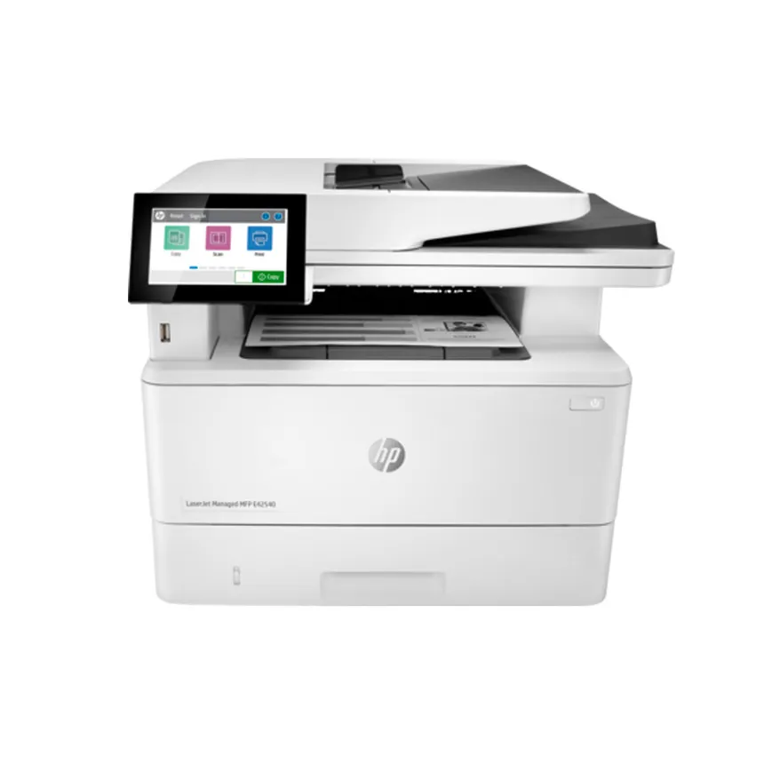
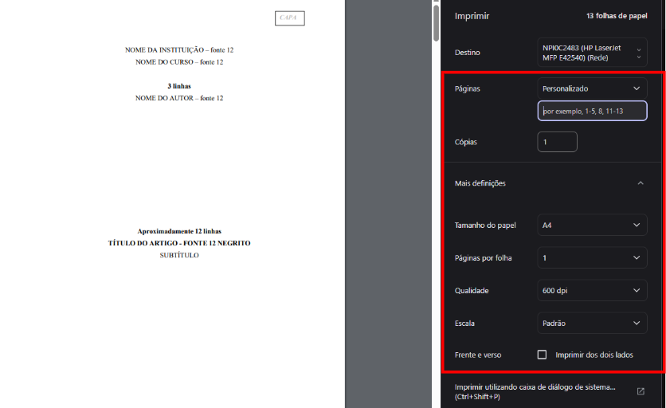
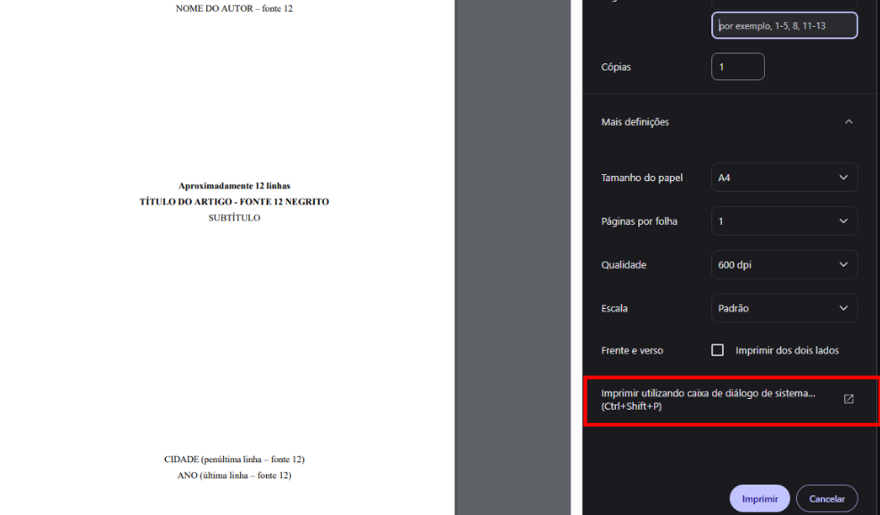
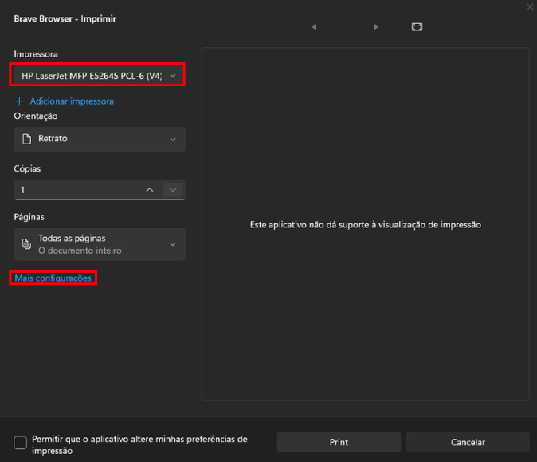
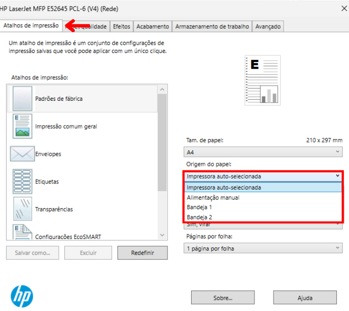
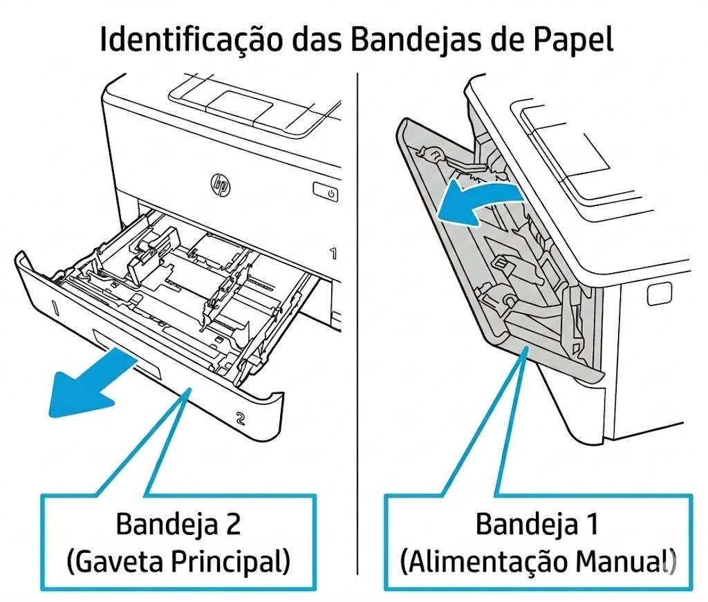
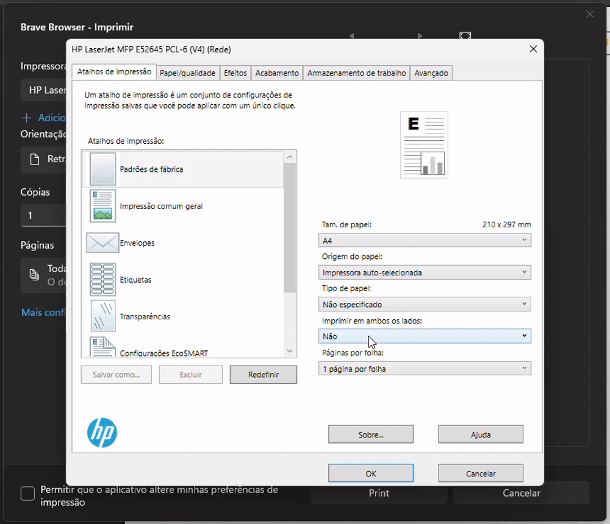
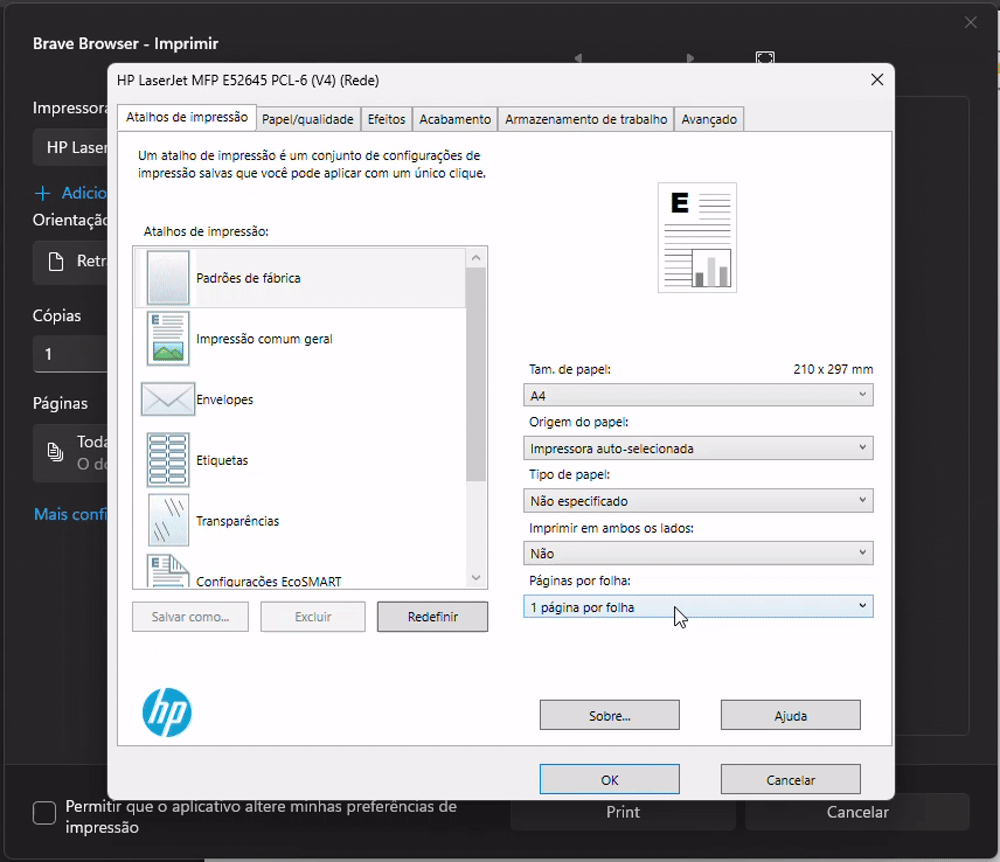
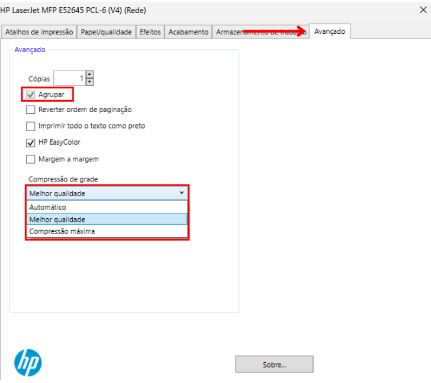
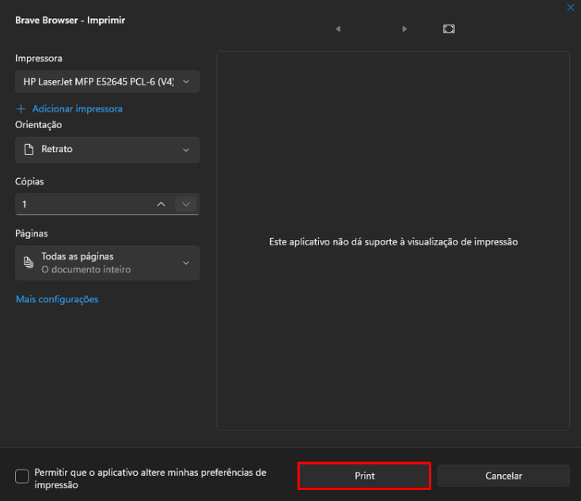

Tutorial
HP LaserJet MFP E42540
Impressão com ajuste de bandeja, frente e verso, agrupamento e qualidade.
1
Selecionar a HP E42540
Abra a impressão e escolha o modelo na lista.


2
Padrão e avançado
Em páginas e papel A4 você resolve o básico; para mais controle abra a caixa de diálogo do sistema.



3
Bandeja, frente e verso e qualidade
Agrupar mantém cada cópia completa e ordenada.
Escolha origem do papel, frente e verso e qualidade de imagem.





